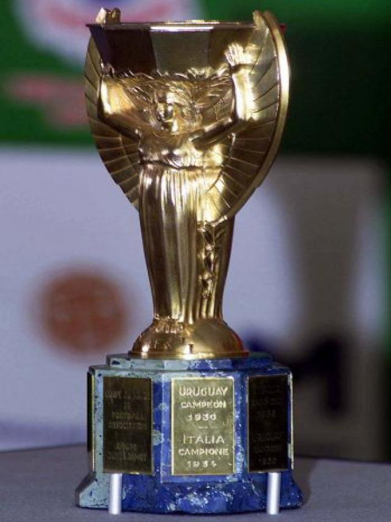

El 13 de julio de 1930 en Uruguay se realizo el primer campeonato mundial de futbol.
1930 fue la primera edicion del campeonato mundial de futbol organizado por la FIFA
En el torneo, participaron 13 selecciones nacionales (12 invitadas más el organizador), divididas en 4 grupos, 3 grupos de 3 equipos y un grupo de 4 equipos
Las selecciones de Argentina, Estados Unidos, Uruguay y Yugoslavia accedieron a las semifinales del torneo tras imponerse en sus respectivos grupos.
